Chapter 8 Medidas de asociación y regresión
8.1 Correlación
Creador de la medida fue Pearson.
La idea es mostrar una relación conjunta de dos o más variables aleatorias en un indicador que varia entre -1 y 1, de tal manera que se pueda interpretar la realción real de las medidas.
8.1.1 Valor de la correlación
Negativo: relación inversa. A medida que una variable aumenta su media, la otra disminuye.
Positivo: relación directa. A medida que una variable aumenta su media, la otra también aumenta.
0: neutro, no hay relación.
Interpretación: Se basa en la magnitud y en signo. Si el valor está cercano a 1 o -1 es una correlación alta.
8.1.2 Prueba estadística
La hipótesis es que no existe correlación. Entonces la prueba estadística tiene que mostrar rechazando esta hipótesis y así concluir que la correlación existe.
\(H_0: \rho = 0~\text{(no existe relación)}\)
\(H_1: \rho \neq 0~\text{(existe relación)}\)
Para fundamentar la respuesta, requiere un número aceptable de pares de datos de la distribución normal bivariada para realizar la prueba que debe ser cercana a 30 observaciones. Si se tiene muchos datos, lo conveniente es extraer al azar un número aproximado a 30.
8.1.3 Gráfico de la dispersión
Permite visualizar la relación existente.
Totalmente disperso, no hay relación. La variancia entre las variables es aleatoria.
Muestra tendencia (+) o (-) indica que hay relación, se traduce como asociación y en estadística se describe como correlación.
Procedimientos: plot(), pairs()
8.1.4 Tipo de variable
El tipo de variable nos indica que procedimiento se debe aplicar para medir la asociación.
Pearson: Variables cuantitativas, observadas de instrumentos de medición. Necesita de cumplimiento del supuesto de normalidad bivariada.
Spearman: Variables cuantitativas ordinales (escala jerárquica) cuanto menos (se puede utilizar en variables cuantitativas discretas y continuas). No necesita de cumplimiento del supuesto de normalidad bivariada.
Kendall: Variables cuantitatitas ordinales (escala jerárquica) cuyo objetivo es establecer concordancia en las medidas.
Cramer: Variables cualitativas nominales u, elaborado ordinal. Requiere una tabla de contingencia obtenida de una encuesta.
8.1.5 Aplicación
Para crear un modelo de regresión lineal simple se tomó como variable dependiente al Recuento de escarabajos en un área. Las posibles variables predictoras fueron:
Temperatura: Temperatura (°C) ambiental.
Altura: Altura (m.s.n.m.) de la observación.
Humedad: Humedad relativa (%) ambiental.
Machos: Género predominante en el área (0 si predominan hembras, 1 si predominan machos).
Urbano: 0 (No) si el conteo se hizo en un área no urbana, 1 (Sí) si el conteo se hizo en un área urbana.
8.1.5.1 Dispersión y valor de la correlación
Dispersión entre la temperatura y el recuento
op <- par(mar = c(4,4,2,2), cex = 0.8)
with(datos,plot(Temperatura,Recuento,pch=19,bty="l"))
with(datos,cor(Temperatura,Recuento)) -> r
r <- round(r,3)
v <- paste("r=",r,sep="")
text(28,300,v,cex=2)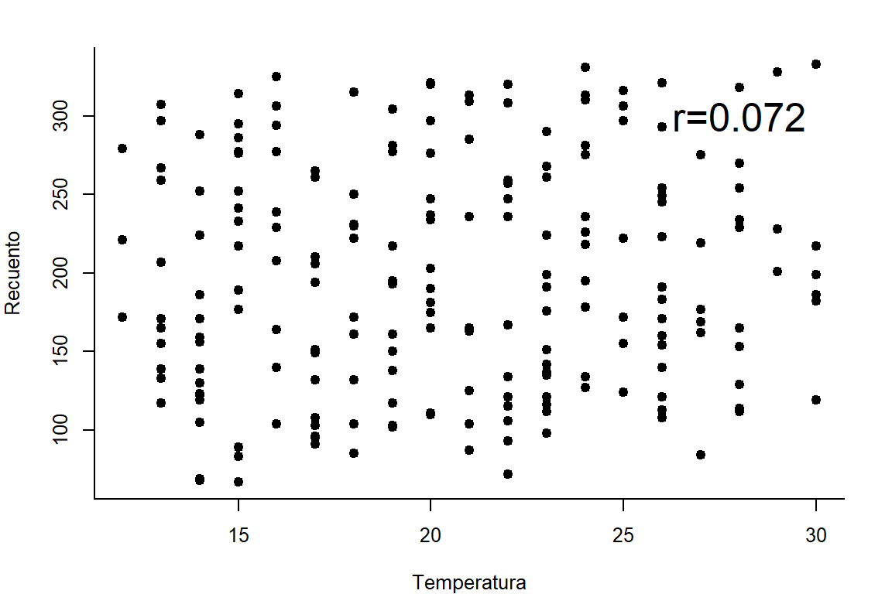
par(op)Dispersión entre la altura y el recuento
op <- par(mar = c(4,4,2,2), cex = 0.8)
with(datos,plot(Altura,Recuento,pch=19,bty="l"))
with(datos,cor(Altura,Recuento)) -> r
r <- round(r,3)
v <- paste("r=",r,sep="")
text(100,300,v,cex=2)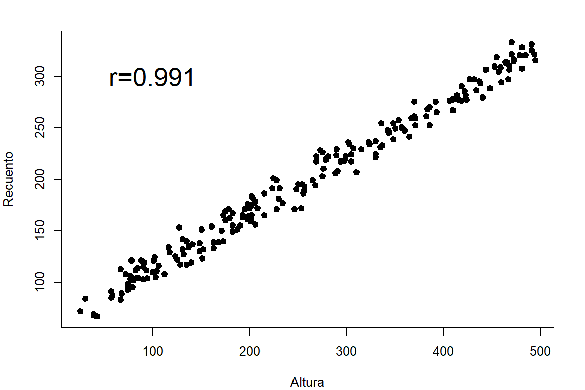
par(op)Nota: La correlación se expresa en valores entre -1 y 1. No utilizar porcentaje.
8.1.5.2 Prueba estadística
Prueba de hipótesis entre la temperatura y el recuento
En primer lugar se comprueba que exista normalidad bivariada entre la Temperatura y el Recuento.
Se genera la hipótesis estadística de la prueba de normalidad bivariada (supuesto de la prueba de hipótesis de correlación de pearson).
\(H_0: \text{Existe distribución normal bivariada entre la temperatura y el recuento}\)
\(H_1: \text{No existe distribución normal bivariada entre la temperatura y el recuento}\)
Se debe confirmar la existencia de distribución normal bivariada entre la temperatura y el recuento, por ello, es obligatorio no rechazar la hipótesis nula para continuar con la prueba.
mvnormtest::mshapiro.test(t(datos[,c(1,6)]))
Shapiro-Wilk normality test
data: Z
W = 0.98964, p-value = 0.1583Conclusión. Con una significancia de 0.1, existe suficiente evidencia estadística para concluir que hay normalidad bivariada en la distribución entre la temperatura y el recuento. Se puede continuar con la prueba de hipótesis de la correlación.
Antes de realizar la prueba de hipótesis de la correlación de Pearson, se contruyó la siguiente hipótesis
\(H_0: \rho = 0~\text{(no existe relación entre la temperatura y el recuento)}\)
\(H_1: \rho \neq 0~\text{(existe relación entre la temperatura y el recuento)}\)
cor <- with(datos,cor.test(Temperatura,Recuento,method="pearson",
conf.level = 0.97))
with(datos,cor.test(Temperatura,Recuento,method="pearson",
conf.level = 0.97))
Pearson's product-moment correlation
data: Temperatura and Recuento
t = 1.0103, df = 198, p-value = 0.3136
alternative hypothesis: true correlation is not equal to 0
97 percent confidence interval:
-0.08268398 0.22256378
sample estimates:
cor
0.07161654 Conclusión. A un nivel de \(\alpha\) de 0.03, se evidencia que el valor de \(\rho\) es estadísticamente similar a 0, por lo tanto, se concluye que no existe relación entre la temperatura y el recuento.
En el análisis se tiene:
valor de t: Estadístico de la prueba.
p-value: En términos de riesgo, indica la probabilidad de rechazar la hipótesis nula siendo esta verdadera. En nuestro caso la probabilidad fue de 0.3135711 nos indica que existe una probabilidad de error de equivocarnos de 31.4%.
En teoría el p-value es la probabilidad de rechazar la \(H_0\) siendo esta verdadera. En correlación la \(H_0\) es planteada como la no existencia de correlación, es decir = 0.
Alternativamente se tiene los límites de confianza. Para no rechazar la \(H_0\) mediante los límites de confianza, estos deben encerrar al valor de 0 (cero incluido en el intervalo).
Alternativa de la hipótesis:
1: hipótesis de un solo ladom solo menor o mayor.
Si el interés es probar que la correlación sea buena y mayor de 0.6, entonces la hipótesis nula será:
\(H_0: \rho \le 0.6\) cuya alternante será \(H_1: \rho > 0.6\)
2 colas: hipótesis de ambos lados (diferencia de cero).
\(H_0: \rho = 0.6\) cuya alternante será \(H_1: \rho \neq 0.6\)
Prueba de hipótesis entre la altura y el recuento
En primer lugar se comprueba que exista normalidad bivariada entre la altura y el Recuento.
Se genera la hipótesis estadística de la prueba de normalidad bivariada (supuesto de la prueba de hipótesis de correlación de pearson).
\(H_0: \text{Existe distribución normal bivariada entre la altura y el recuento}\)
\(H_1: \text{No existe distribución normal bivariada entre la altura y el recuento}\)
Se debe confirmar la existencia de distribución normal bivariada entre la altura y el recuento, por ello, es obligatorio no rechazar la hipótesis nula para continuar con la prueba.
mvnormtest::mshapiro.test(t(datos[,c(2,6)]))
Shapiro-Wilk normality test
data: Z
W = 0.99128, p-value = 0.2729Conclusión. Con una significancia de 0.1, existe suficiente evidencia estadística para concluir que hay normalidad bivariada en la distribución entre la altura y el recuento. Se puede continuar con la prueba de hipótesis de la correlación.
Antes de realizar la prueba de hipótesis de la correlación de Pearson, se contruyó la siguiente hipótesis:
\(H_0: \rho = 0~\text{(no existe relación entre la altura y el recuento)}\)
\(H_1: \rho \neq 0~\text{(existe relación entre la altura y el recuento)}\)
with(datos,cor.test(Altura,Recuento,method="pearson",
conf.level = 0.99))
Pearson's product-moment correlation
data: Altura and Recuento
t = 107.04, df = 198, p-value < 0.00000000000000022
alternative hypothesis: true correlation is not equal to 0
99 percent confidence interval:
0.9877111 0.9940831
sample estimates:
cor
0.9914704 Conclusión. A un nivel de de 0.01, se evidencia que el valor de no es estadísticamente similar a 0, por lo tanto, se concluye que existe relación entre la altura y el recuento.
8.2 Otros métodos
8.2.1 Método de Spearman
Pearson utiliza los medidos y Spearman con datos en escala de orden (como mínimo).
Para una mejor observarción del comportamiento de la correlación, se utilizara datos de suelo.
op <- par(mar=c(4,4,2,2),cex = 0.8)
data(soil)
panel.cor <- function(x,y,digits = 3, prefix = "", cex.cor, ...)
{
usr <- par("usr"); on.exit(par(usr))
par(usr = c(0,1,0,1))
r <- abs(cor(x,y))
txt <- format(c(r, 0.123456789), digits = digits)[1]
txt <- paste0(prefix,txt)
if(missing(cex.cor)) cex.cor <- 0.8/strwidth(txt)
text(0.5,0.5,txt,cex=cex.cor*r)
}
pairs(soil[6:10], upper.panel = panel.cor, lower.panel = panel.smooth)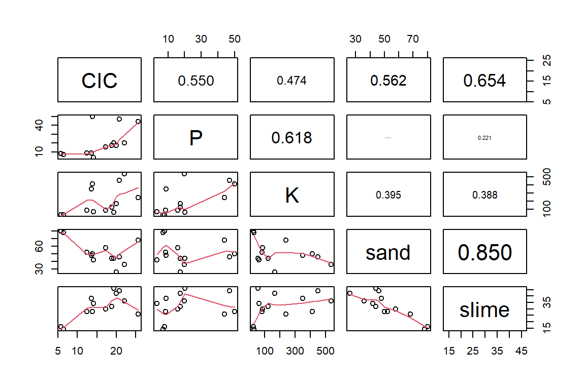
Matriz de correlación
r <- correlation(soil[,6:10],method = "spearman")
r$correlation CIC P K sand slime
CIC 1.00 0.67 0.62 -0.54 0.52
P 0.67 1.00 0.69 -0.20 0.34
K 0.62 0.69 1.00 -0.41 0.39
sand -0.54 -0.20 -0.41 1.00 -0.80
slime 0.52 0.34 0.39 -0.80 1.00round(r$pvalue,4) CIC P K sand slime
CIC 1.0000 0.0122 0.0252 0.0588 0.0668
P 0.0122 1.0000 0.0095 0.5047 0.2500
K 0.0252 0.0095 1.0000 0.1611 0.1869
sand 0.0588 0.5047 0.1611 1.0000 0.0011
slime 0.0668 0.2500 0.1869 0.0011 1.0000Se observa que la correlación arena vs limo es alta (r = -0.8) negativamente significativa que hay una relación inversa entre ambos.
op <- par(mar = c(4,4,2,2),cex = 0.8)
with(soil,plot(sand, slime, pch = 19, col="blue",
bty ="l"))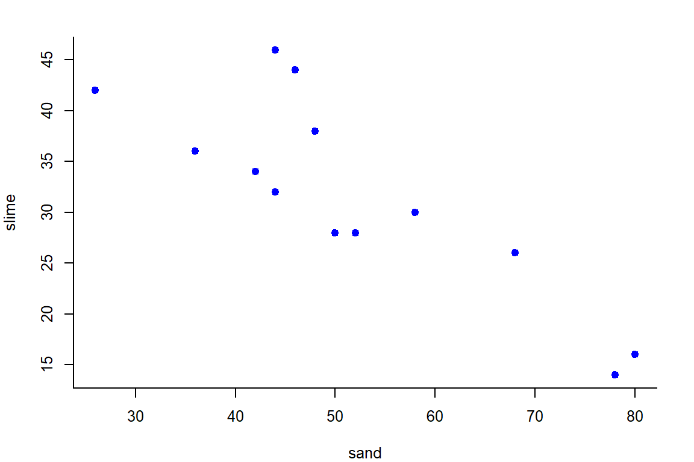
par(op)8.2.2 Gráfico exploratorio
datos %>%
select_if(is.numeric)%>%
pairs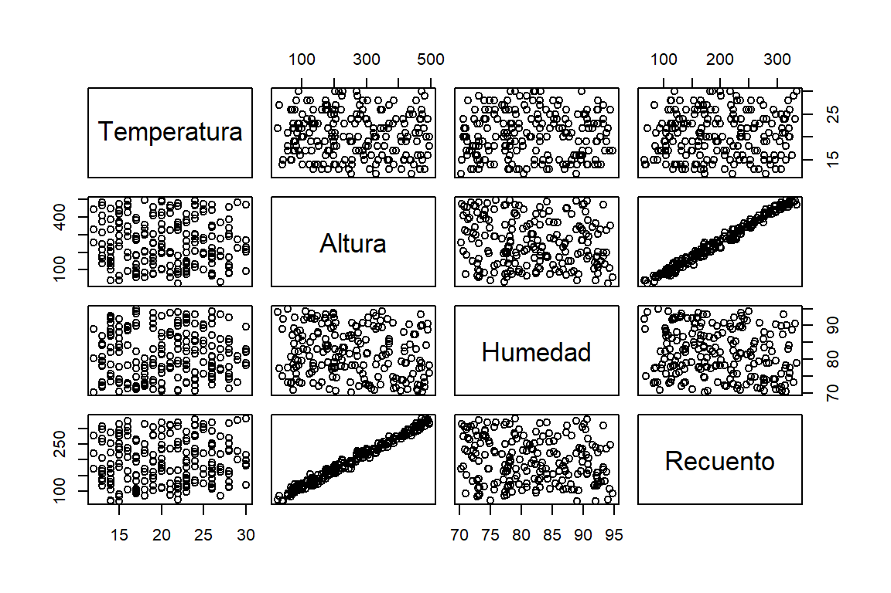
datos %>%
select_if(is.numeric)%>%
pairs.panels(stars = T,smooth = F, lm = T)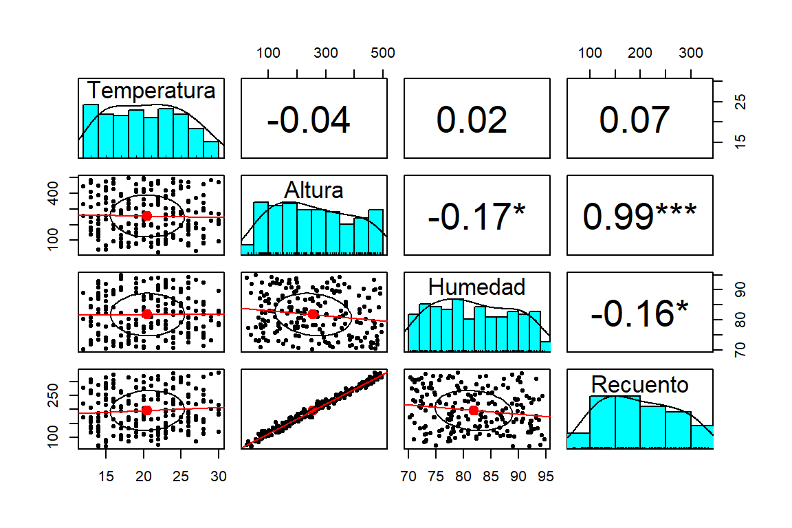
datos%>%
ggpairs + theme_bw()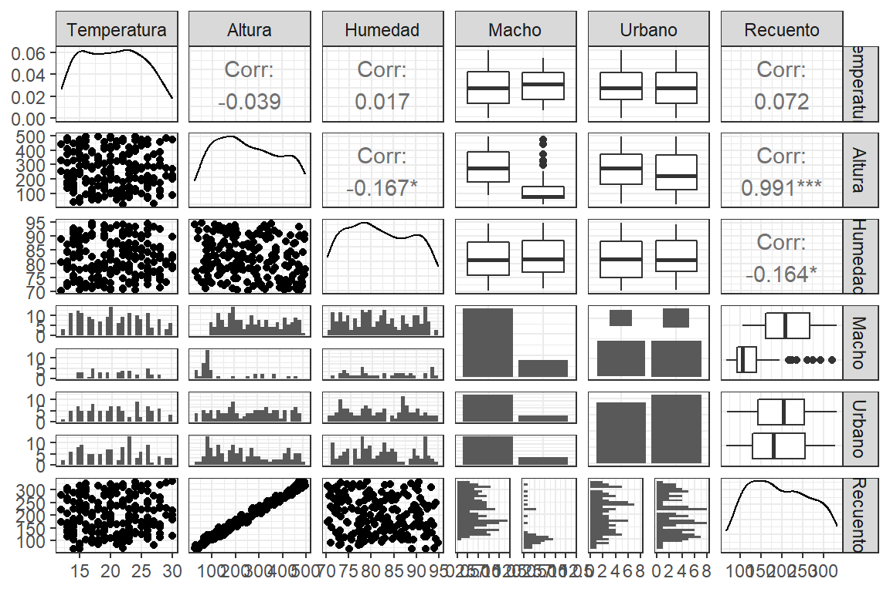
datos%>%
ggpairs(upper = list(continuous = "density", combo = "box_no_facet"),
lower = list(continuous = "points",
combo = "dot_no_facet")) + theme_test()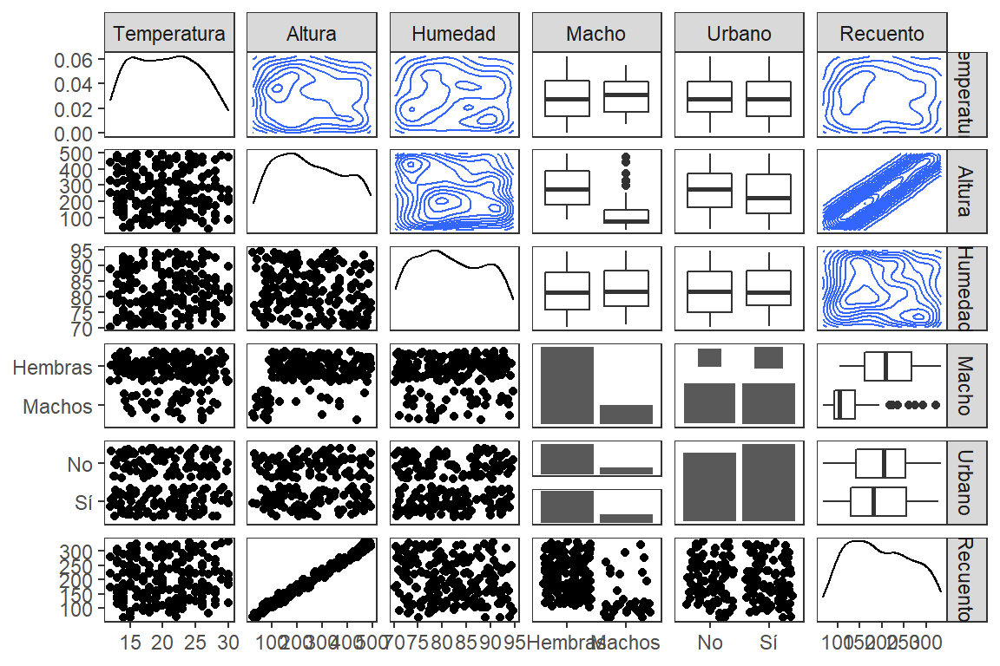
8.3 Regresión
Se busca construir un modelo lineal simple, que permita predecir la respuesta mediante un modelo lineal de primer grado. Se entiende que la variable respuesta (dependiente) expuesta a ser predicha, debe ser aleatoria y la variable explicativa (independiente) debe ser fija no sujeta a error.
Para estimar un mejor modelo de regresión, se debe utilizar observaciones lo más diferentes para contemplar el dominio de la respuesta.
\[Y_i=\beta_0 + \beta_1 X_i + \epsilon_i\]
\(X_i\): Variable independiente (en este ejercicio es la altura).
\(Y_i\): Variable respuesta, dependiente de \(X_i\) (en este ejercicio es el recuento).
\(\beta_0\): parámetro intercepto. Tiene unidades de la variable respuesta. Es el valor (media condicional) que tomará el recuento cuando la altura sea cero.
\(\beta_1\): parámetro pendiente, tasa de cambio de \(Y\) al aumentar una unidad en \(X\), las unidades de este parámetro es la razón entre \(Y\) y \(X\).
\(\epsilon_i\): Error aleatorio del modelo. Es un vector de errores o residuos que se calcula con la diferencia entre el valor real y observado de la variable respuesta con el valor ajustado o predicho de esta variable.
\[\epsilon_i = Y_i - \hat{Y}_i\]
donde:
\(\hat{Y}_i\) es el valor ajustado o predicho de la variable respuesta, se obtiene de la siguiente manera:
\[\hat{Y}_i = \beta_0 + \beta_1 X_i\]
8.3.1 Aplicación
Usar las variables Altura (indendiente) y Recuento (Dependiente).
A continuación presentamos el modelo de regresión lineal.
\[Recuento_i = \beta_0+\beta_1*Altura_i+\epsilon_i\]
Teniendo en cuenta los valores repetidos es apropiado promediar, para tener valores únicos y que sean lo más distinto posible. Este procedimiento no es obligatorio.
op <- par(mar = c(4,4,2,2),cex = 0.8)
recmean <- with(datos,tapply.stat(Altura,Recuento,mean))
with(datos,plot(Altura, Recuento, pch = 19, bty = "l",
main = "Recuento sin promediar según la altura"))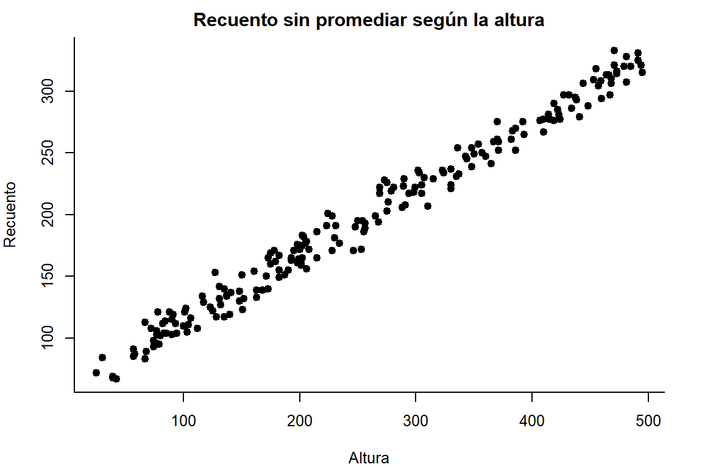
with(recmean,plot(Altura, Recuento, pch = 19, bty = "l",
main = "Recuento promediado según la altura"))par(op)8.3.1.1 Construcción del modelo
modelo <- lm(Recuento ~ Altura, data = recmean)
summary(modelo)
Call:
lm(formula = Recuento ~ Altura, data = recmean)
Residuals:
Min 1Q Median 3Q Max
-18.9829 -5.7816 -0.5109 6.3318 25.2946
Coefficients:
Estimate Std. Error t value Pr(>|t|)
(Intercept) 59.501813 1.505497 39.52 <0.0000000000000002 ***
Altura 0.537036 0.005229 102.70 <0.0000000000000002 ***
---
Signif. codes: 0 '***' 0.001 '**' 0.01 '*' 0.05 '.' 0.1 ' ' 1
Residual standard error: 8.698 on 144 degrees of freedom
Multiple R-squared: 0.9865, Adjusted R-squared: 0.9864
F-statistic: 1.055e+04 on 1 and 144 DF, p-value: < 0.00000000000000022Hipótesis generadas:
- Para el \(\beta_0\) (intercepto).
\(H_0: \beta_0 = 0\)
\(H_1: \beta_0 \neq 0\)
- Para el \(\beta_1\) (pendiente).
\(H_0: \beta_1 = 0\)
\(H_1: \beta_1 \neq 0\)
En el resumen se tiene la descripción del modelo.
- La estimación de los parámetros con su significación estadística.
- Las estadísticas de los errores.
- Error estándar del modelo = raíz cuadrada del cuadrado medio del error.
- \(R^2\) mide el grado de determinación del modelo (importancia o explicación de la variancia de la varible independiente sobre la dependiente) solo para modelo de regresión lineal simple.
- \(R^2\) ajustado, mide el grado de determinación del modelo lineal de muchas variables. Es una medida penalizada por el tamaño de muestra.
- Prueba del modelo mediante la prueba de F para la acaptación del modelo.
De acuerdo a nuestro análisis
\(\hat \beta_0 = -105.89891\)
\(\hat \beta_1 = 1.83699\)
El intercepto no es interpretable, porque el dominio de la variable recuento no considera valores menores a 0.
Ambos coeficientes son significativos según el pvalue.
\(R^2=0.9865\) que equivale a decir que la altura explica el \(98.65\%\) de la variancia del recuento.
el p-value fue de < 0.00000000000000022, es cero, se concluye que el modelo es aceptable o tiene buenas variables regresoras.
8.3.1.2 Análisis de variancia
Prueba de hipótesis del ANOVA para una regresión:
\(H_0: \text{La variable regresora tiene una influencia no significativa sobre la variable predicha}\)
\(H_1: \text{La variable regresora tiene una influencia significativa sobre la variable predicha}\)
anova(modelo)Analysis of Variance Table
Response: Recuento
Df Sum Sq Mean Sq F value Pr(>F)
Altura 1 798016 798016 10548 < 0.00000000000000022 ***
Residuals 144 10894 76
---
Signif. codes: 0 '***' 0.001 '**' 0.01 '*' 0.05 '.' 0.1 ' ' 1cat("F tabular al 0.05 de alfa:",qf(0.05,1,144,lower.tail = F),".\n")F tabular al 0.05 de alfa: 3.906849 .cat("F tabular al 0.01 de alfa:",qf(0.01,1,144,lower.tail = F),".\n")F tabular al 0.01 de alfa: 6.814199 .cat("F tabular al 0.005 de alfa:",qf(0.005,1,144,lower.tail = F),".\n")F tabular al 0.005 de alfa: 8.127817 .cat("F tabular al 0.001 de alfa:",qf(0.001,1,144,lower.tail = F),".\n")F tabular al 0.001 de alfa: 11.28538 .8.3.1.3 Gráfico del modelo:
op <- par(mar=c(4,4,2,2), cex = 0.8)
with(recmean,plot(Altura, Recuento, pch = 19, bty = "l"))
abline(modelo, col = "blue")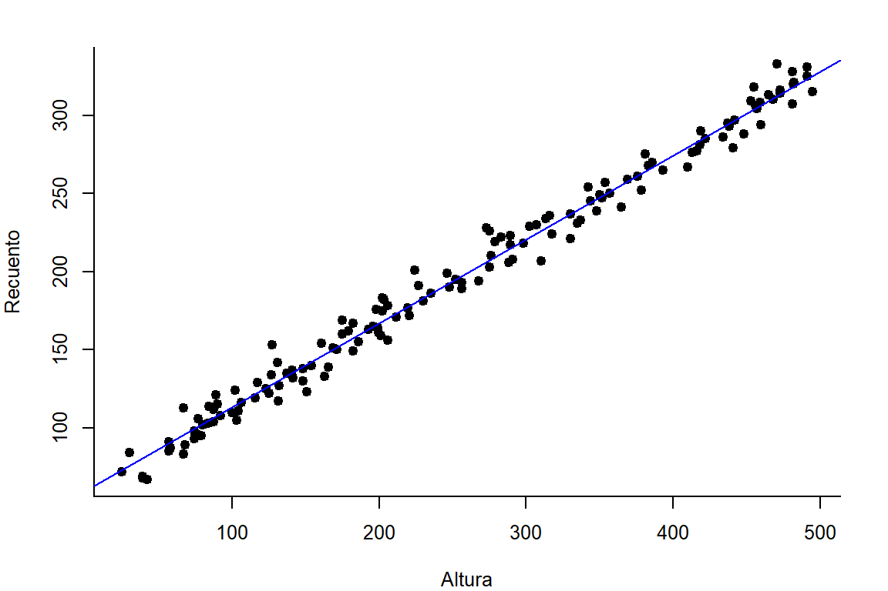
par(op)8.3.1.4 Gráfico de los supuestos del modelo:
op <- par(mfrow=c(2,2), cex = 0.8)
plot(modelo)par(op)1. Falta de ajuste
Se analiza, si falta ajustar mejor el modelo, la línea roja es la que nos permite entender si se debe agregar algunos términos más en el modelo.
Hay posibilidad de hacer un ajuste en el modelo.
2. La normalidad
Los puntos deben estar sobre la línea (perfecta normalidad en los errores).
Se puede hacer un gráfico de normalidad y una prueba de hipótesis.
3. La magnitud del error
Es un gráfico estándar para detectar errores muy grandes. Es tolerable valores menores a 1.5.
Exsiten tres posibles valores con errores críticos.
4. Valores extremos
En el gráfico se puede detectar los outliers, que son posibles valores influyentes en el comportamiento del modelo.
No hay valores extremos en el ejemplo.
8.3.1.5 Ajuste del modelo
modelo1 <- lm(Recuento ~ Altura + I(Altura^2), data = recmean)
summary(modelo1)
Call:
lm(formula = Recuento ~ Altura + I(Altura^2), data = recmean)
Residuals:
Min 1Q Median 3Q Max
-19.7192 -5.8774 -0.4817 6.0545 25.3046
Coefficients:
Estimate Std. Error t value Pr(>|t|)
(Intercept) 57.2889837 2.7238017 21.033 <0.0000000000000002 ***
Altura 0.5598169 0.0239453 23.379 <0.0000000000000002 ***
I(Altura^2) -0.0000428 0.0000439 -0.975 0.331
---
Signif. codes: 0 '***' 0.001 '**' 0.01 '*' 0.05 '.' 0.1 ' ' 1
Residual standard error: 8.7 on 143 degrees of freedom
Multiple R-squared: 0.9866, Adjusted R-squared: 0.9864
F-statistic: 5273 on 2 and 143 DF, p-value: < 0.00000000000000022El termino polinomial cuadrático de la Altura de planta, no posee una explicación de la variancia o no aporta en la linealidad del modelo.
8.3.1.6 La normalidad de los errores.
op <- par(mar = c(4,4,2,2), cex=0.8)
error <- residuals(modelo)
plot(density(error), main = "Distribución del error")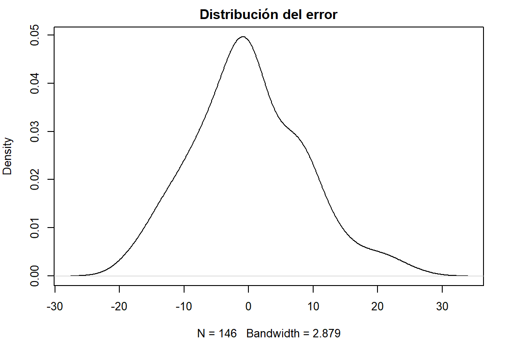
shapiro.test(error)
Shapiro-Wilk normality test
data: error
W = 0.98802, p-value = 0.2423par(op)Prueba de hipótesis de la normalidad:
\(H_0: \text{La distribución de los errores se distribuye de forma similar a la función normal o gaussiana}\)
\(H_1: \text{La distribución de los errores no se distribuye de forma similar a la función normal o gaussiana}\)
Conclusión. A un nivel de significancia de 0.1, se concluye que no existe suficiente evidencia estadística para rechazar la hipótesis nula, por lo tanto, la distribución de los errores es similar a la función normal.
8.3.1.7 Predecir el recuento de escarabajos en una altura propuesta.
Cálculo de los valores predichos del modelo con los datos observados
pred <- predict(modelo)
recmean$prediccion <- pred
head(recmean) Recuento Altura prediccion
1 67 42 82.05732
2 68 39 80.44621
3 69 39 80.44621
4 72 25 72.92771
5 83 67 95.48321
6 84 30 75.61289ggplot(recmean, aes(x = `Recuento`, y = `prediccion`)) +
geom_point() + labs(y = "Recuento predicho",
x = "Recuento real") +
geom_abline(intercept = 0, col = "red")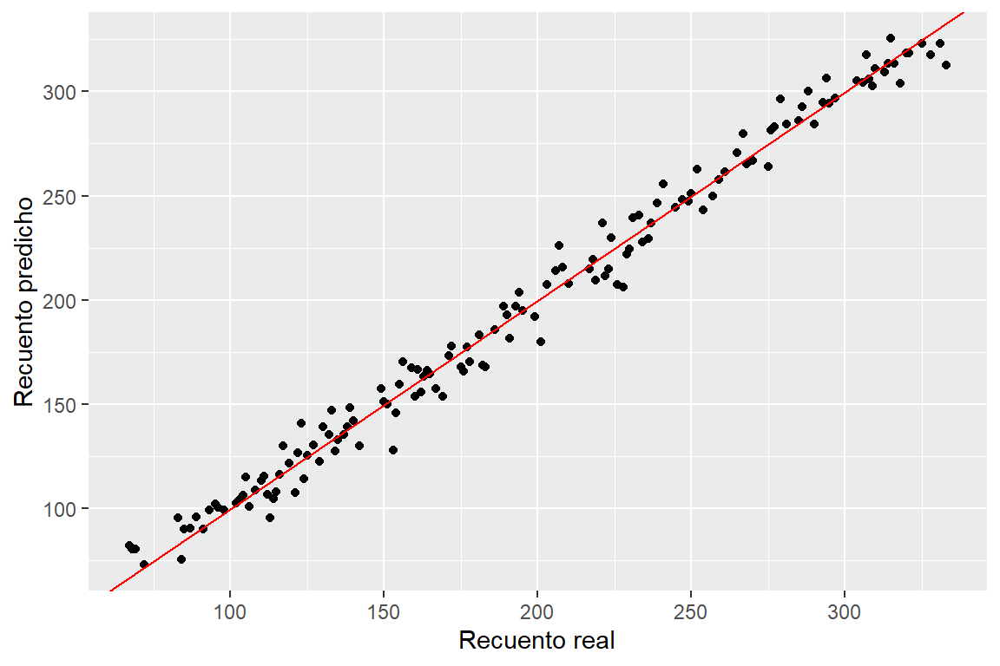
Cálculo de una predicción en un valor estacionario
Predecir el recuento de escarabajos en altura de 100, 500, y 4000 m.s.n.m.
altnuevo <- c(100,500,4000)
recnuevo <- predict(modelo, newdata = data.frame(Altura = altnuevo))
cbind(altnuevo, recnuevo) altnuevo recnuevo
1 100 113.2054
2 500 328.0197
3 4000 2207.6450